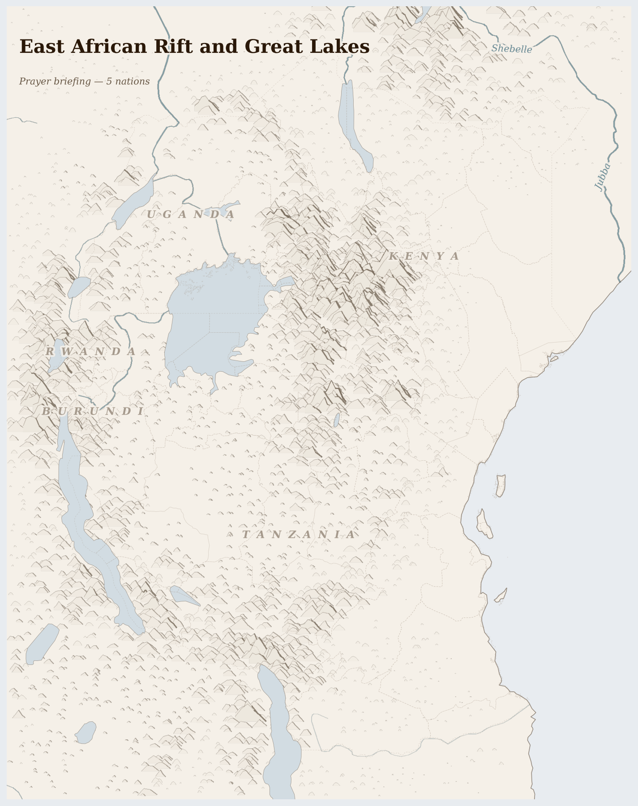

East African Rift and Great Lakes
Before first light on the hillsides above Lake Kivu, a Burundian woman bends to strip ripe coffee cherry from a bush she planted the year her youngest was born. She will carry the harvest downhill to a washing station where the price — set this morning on an exchange in New York — will determine whether her daughter sits for school exams in April or stays home to help with the beans.
This Week
Kenya: In January, WFP assisted 1.7 million people in Kenya with food and nutrition assistance, distributing 8,000 metric tons of food and USD 3 million through cash-based transfers.
Kenya: Extremely Critical acute malnutrition (IPC AMN Phase 5) is confirmed in Mandera, North Horr/Chalbi (Marsabit), and Turkana South and East in Kenya's Arid and Semi-Arid Lands.
Burundi: Burundi is facing a growing humanitarian emergency as thousands of people fleeing violence in eastern DRC continue to cross the border, placing increasing strain on health services and infrastructure.
Burundi: Burundi continued to face a highly strained humanitarian situation marked by sustained refugee presence, accelerated returns of Burundian refugees from Tanzania, and deepening food insecurity.
Tanzania: The Keeping Adolescent Girls in School (KAGIS) programme, implemented by Plan International in Tanzania, completes its five-year run in March 2026.
Lives Lived Here
In Kericho, in Kenya's southwestern highlands, tea is picked by hand — leaf by leaf, by women earning roughly 500 shillings a day, about $4. The Kenya Tea Development Agency collects from over 400,000 smallholder households, trucks the leaf to factories where it is withered, rolled, and dried, then ships it through Mombasa to auction houses in London and buyers in Pakistan, Egypt, and the Gulf. A Kenyan smallholder with half a hectare of tea earns what the market allows, which is less each year in real terms, and she intercropping beans and maize between the tea rows to feed her family on land that could feed them better if it were not feeding the world.
On the Naivasha lakeshore in Kenya's Rift Valley, 90,000 workers — most of them women, most of them on casual contracts — tend roses in 170 commercial farms, sixty percent foreign-owned. The flowers leave by refrigerated truck to Nairobi's Jomo Kenyatta Airport, then by air freight to the Dutch flower auctions in Aalsmeer, arriving in European shops within 48 hours of being cut. The lake that irrigates the farms has dropped measurably; the aquifer beneath serves both the greenhouses and the town.
At a fish landing on Mfangano Island in Lake Victoria, a cooperative of women buys dagaa — the tiny silver cyprinid that is the lake's last abundant catch — dries it on raised wire racks, and sells it in Kisumu market. The protein feeds school lunch programmes across three counties. Upstream on the same lake, Nile perch fillets are processed in export factories for European supermarkets, while the communities who once fished two hundred endemic cichlid species eat the dried dagaa the perch left behind.
In Kayanza province, Burundi, 120,000 smallholder families grow some of the most sought-after Arabica coffee in the world. Specialty roasters in Brooklyn and Berlin sell it for $25 a bag. The farmer who grew it received a fraction of that — enough, in a good year, to keep one child in school. In a bad year, when rains fail or prices drop, the coffee money does not cover the fertiliser debt from the previous season.
In Kericho, in Kenya's southwestern highlands, tea is picked by hand — leaf by leaf, by women earning roughly 500 shillings a day, about $4. The Kenya Tea Development Agency collects from over 400,000 smallholder households, trucks the leaf to factories where it is withered, rolled, and dried, then ships it through Mombasa to auction houses in London and buyers in Pakistan, Egypt, and the Gulf. A Kenyan smallholder with half a hectare of tea earns what the market allows, which is less each year in real terms, and she intercropping beans and maize between the tea rows to feed her family on land that could feed them better if it were not feeding the world.

Reference map. Country boundaries and features are approximate.
What Presses
The weight on East African Rift and Great Lakes
Turkana and Marsabit, northern Kenya — This is the driest inhabited land in the bioregion, where Turkana and Rendille pastoralists have survived for centuries by reading the landscape with a precision that formal meteorology is only now learning to match. The IPC has classified Mandera, Turkana South, Turkana East, and North Horr in Marsabit as Extremely Critical for acute malnutrition — Phase 5, the highest category. WFP reached 1.7 million people in January, but the pipeline depends on funding cycles that do not match hunger cycles. Children are being treated for severe wasting in health posts a day's walk from the nearest road. The herds that once provided milk are smaller each year as rangeland converts to agriculture and conservancy.
Busuma and the Burundi-DRC border — Thousands of Congolese are crossing into Burundi to escape fighting in eastern DRC. WHO reports a growing humanitarian emergency as border health facilities — already under-resourced for the local population — absorb arrivals who carry the trauma and sometimes the diseases of conflict zones. Burundi itself has 1.17 million people food insecure, 6,930 internally displaced, and a humanitarian funding gap that means international presence in the hardest-hit northern provinces is functionally zero. The refugee influx arrives into a country that cannot feed its own.
Lake Naivasha, Kenya Rift Valley — Ninety thousand workers, predominantly women on casual contracts, sustain a cut-flower industry worth over $1 billion annually in exports. The lake's water level has dropped as flower farms, fed by boreholes and direct extraction, consume more than the catchment replaces. Downstream communities and the lake's own ecosystem — hippos, fish eagles, papyrus beds — compete for what remains. The women who cut the roses breathe pesticide mist in greenhouses owned by companies registered in the Netherlands. Their wages keep families in Naivasha; the flowers keep tables set in Amsterdam.
Tea, coffee, roses, gold, tanzanite, coltan, oil. Seven resource streams leave these five countries. What comes back is the price — always set somewhere else, always less than the cost of growing, mining, or cutting what was taken. 247 killed (3 months); 4.3M food insecure (current); tea, cut flowers (roses, carnations, chrysanthemums), coffee (Robusta and specialty Arabica) leaving.
The dagaa drying on the wire rack at Mfangano Island is the last abundant fish in a lake that once held two hundred species. We ate the others. The women who dry what remains did not choose this diet.
For Prayer
For the 4.3 million people across this bioregion who cannot feed themselves today — especially the children in Turkana, Marsabit, and Mandera confirmed at the most critical level of acute malnutrition. For the WFP teams distributing food in January who do not yet know if March funding will arrive. For the mothers walking a day to reach a health post.
For the Congolese families arriving in Busuma, Burundi, carrying what they could carry, fleeing violence they did not start. For the Burundian health workers receiving them in facilities already stretched beyond capacity. For the Burundian and Rwandan refugees providing agricultural labour in Tanzania and Uganda — people whose hands feed countries that are not their own.
For the women picking tea leaf by leaf in Kericho for $4 a day. For the 90,000 flower farm workers at Lake Naivasha breathing pesticide mist in foreign-owned greenhouses. For the women drying dagaa on Mfangano Island, keeping protein in local markets. For the coffee farmers' wives in Kayanza sorting cherry while the price is decided in New York. Their labour is the foundation of everything that leaves this region.
For the artisanal miners in Merelani, in Nyungwe, in Kayanza — 10,000 tanzanite diggers, 15,000 coltan miners, 5,000 gold panners — working in hazardous pits for $2-5 a day so that gems can reach Antwerp and capacitors can reach Samsung. For the women in mining communities exposed to mercury and violence. For the children who should not be underground.
For Lake Victoria, the largest tropical lake on earth, feeding 40 million people and choking on hyacinth and runoff. For the two hundred cichlid species the Nile perch displaced. For Lake Naivasha, dropping as the greenhouses drink. For the Maasai corridors closing, the hillside terraces eroding, the EACOP pipeline route cutting through watershed. For the land that sustains and the people who know how to listen to it.
Out of the depths have I cried to you, O Lord; Lord, hear my voice; let your ears consider well the voice of my supplication.
Most merciful God, who by the death and resurrection of your Son Jesus Christ delivered and saved the world: grant that by faith in him who suffered on the cross we may triumph in the power of his victory; through Jesus Christ your Son our Lord, who is alive and reigns with you, in the unity of the Holy Spirit, one God, now and for ever.
Amen.
Seeds of Hope
On Mfangano Island in Lake Victoria, women's cooperatives have built a dagaa-drying operation that keeps protein in local markets rather than sending it to export processing. The racks are simple — wire mesh over wooden frames — but the decision to sell dried dagaa in Kisumu rather than wet fish to a factory is an act of food sovereignty that feeds school lunch programmes across three Kenyan counties.
For Reflection
Whose hunger makes your abundance possible?
What does it mean to pray 'give us this day our daily bread' alongside those who lack it?
Looking Ahead
- The next 30 days will test two fragile systems simultaneously.
- In northern Kenya, the long rains (March-May) are arriving into a landscape where malnutrition is already at Phase 5 — if the rains come heavy, as the 237% precipitation anomaly suggests, they will bring flooding to communities that need gentle, sustained moisture, not deluge.
- WFP's January pipeline reached 1.7 million, but funding cycles do not guarantee March deliveries.
Carry This
What to bring with you from this briefing
Take Action
Organizations working at the nodes this briefing traces
Investigates the 3Ts (tin, tantalum, tungsten) and gold supply chains flowing from artisanal mines in eastern DRC, Rwanda, and Burundi into global electronics markets. Documents how traceability schemes are circumvented and conflict minerals relabeled.
Traces the mineral flows the briefing maps — 3T ores moving from artisanal mines in the Kivus through Rwandan and Ugandan trading houses into international smelters, revealing how due diligence certification can obscure rather than illuminate the armed group revenues and labor exploitation at extraction sites.
Intergovernmental organization coordinating fisheries management across Kenya, Uganda, and Tanzania's shared Lake Victoria waters. Monitors fish stocks, illegal fishing, and the ecological health of the world's largest tropical lake.
Manages the fishery the briefing identifies as the region's most critical shared resource — where Nile perch overfishing, water hyacinth invasion, and industrial pollution from Kampala and Kisumu converge to threaten the livelihoods of millions of small-scale fishers around the lake's shores.
Represents Fairtrade-certified producer organizations across East Africa, including tea and coffee cooperatives in Kenya, Uganda, Rwanda, and Tanzania. Provides market access, premium distribution, and climate adaptation support to smallholder farmers.
Works with the tea and coffee smallholders the briefing identifies — communities in Kenya's highlands and Rwanda's hillsides receiving a fraction of export value while bearing the costs of soil exhaustion, climate-shifted growing seasons, and price volatility set by commodity exchanges in London and New York.
Researches and advocates on refugee and displacement issues across the Great Lakes region, including Congolese refugees in Uganda, Burundian refugees in Tanzania, and South Sudanese in Kenya. Centers displaced community perspectives in policy.
Amplifies the displaced communities the briefing traces — pastoralists pushed from grazing lands by mining concessions, farming communities displaced by armed group violence in the Kivus, and climate migrants from drought-hit pastoral areas of northern Kenya whose movement is shaped by the same resource pressures the briefing maps.
Works on extractive sector transparency in Uganda, Tanzania, Kenya, and Mozambique. Monitors oil development in Uganda's Albertine Graben, Tanzania's gas reserves, and Kenya's Turkana oil, pushing for revenue transparency and community benefit sharing.
Addresses the emerging oil and gas extraction the briefing documents — Uganda's Albertine Graben oil pipeline, Tanzania's LNG development, and Kenya's Turkana oil, where extractive revenues risk reproducing the resource curse patterns that have destabilized mineral-rich areas of the Great Lakes region.
Generated 2026-03-18